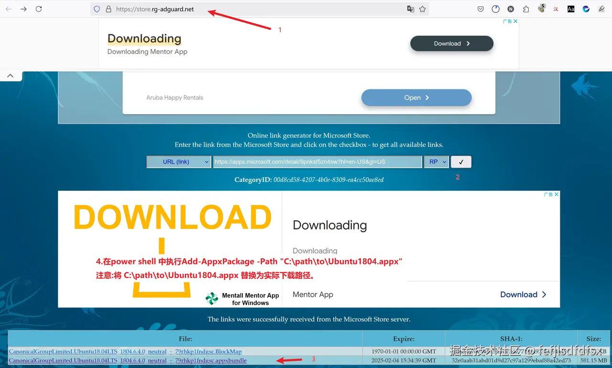
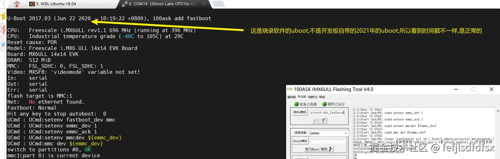
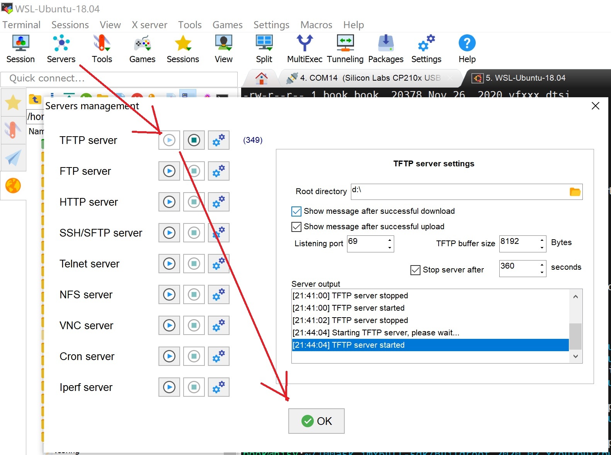
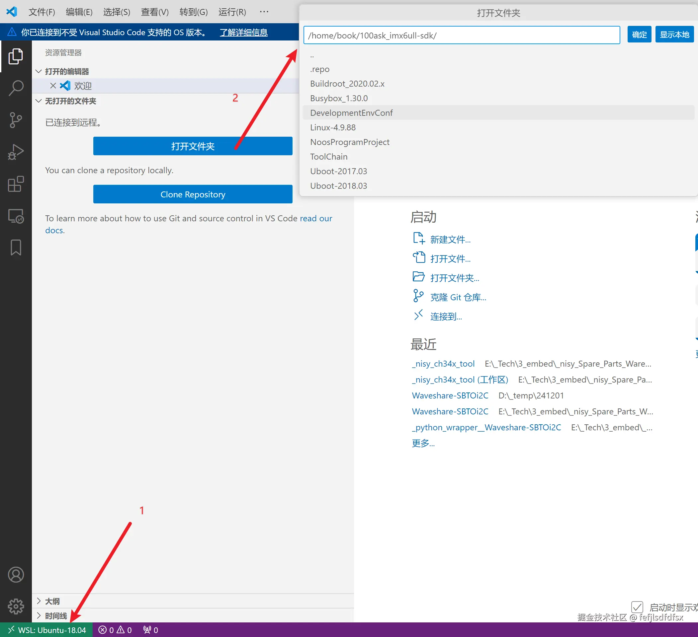

[toc]
使用wsl2搭建韦东山imx6ull pro开发板的开发环境
现在linux开发环境一般比较复杂,以韦东山的imx6ull pro开发板为例,需要使用vmware运行虚拟机,然后打通 开发板<->虚拟机<->windows桌面这3者的互通,导致很复杂.本文通过wsl2编译镜像,去掉vmware环境,开发板只从windows桌面传递文件,减少环境的复杂性.开发板和windows桌面的连接是参考《嵌入式Linux应用开发完全手册V5.2_IMX6ULL_Pro开发板.pdf》的《第四 A 章 使用 USB 网卡直连配置网络》方法.
注:因为开发板又有emmc,又有sd卡,并且烧sd卡时需要先上电再拔卡,导致容易混乱,我是直接放弃使用sd卡,只使用emmc.
安装wsl2的ubuntu 18.04版本
为了保持环境的一致性,还是需要安装ubuntu 18.04.我在微软store下载wsl的ubuntu18.04直接闪退,后来了解到在 https://store.rg-adguard.net/ 可以下载商店的软件包,然后用如下图中 1\~3步下载:

第4步:在powershell中安装下载的.appx的离线包:
Add-AppxPackage -Path "C:\path\to\Ubuntu1804.appx"
注意:将 C:\path\to\Ubuntu1804.appx 替换为实际下载路径。
因为把ubuntu 18.04 后续编译buildroot导致会占用C盘空间太多,所以一开始就转到E盘,参考如下:
PS C:\Users\nisy_tc> wsl --shutdown
PS C:\Users\nisy_tc> wsl --export Ubuntu-18.04 D:\_temp\ubuntu-18.04.tar
正在导出，这可能需要几分钟时间。...: ./var/lib/lxd/unix.socket: pax format cannot archive sock
操作成功完成。
PS C:\Users\nisy_tc> wsl --unregister Ubuntu-18.04
正在注销。
操作成功完成。
PS C:\Users\nisy_tc> wsl --import Ubuntu-18.04 E:\_wsl_ubuntu18.04 D:\_temp\ubuntu-18.04.tar
正在导入，这可能需要几分钟时间。
操作成功完成。
PS C:\Users\nisy_tc>
wsl2的ubuntu 18.04中下载100ask_imx6ull-sdk 和编译Buildroot
下载100ask_imx6ull-sdk代码
启动ubunut 18.04后,添加book账户:
sudo useradd -m -s /bin/bash book
sudo passwd book ##输入密码123456
sudo usermod -aG sudo book
按照<嵌入式Linux应用开发完全手册V5.2_IMX6ULL_Pro开发板.pdf> 文档的<2.2 安装 Ubuntu 软件 >章节:
git clone https://e.coding.net/weidongshan/DevelopmentEnvConf.git
cd DevelopmentEnvConf
sudo ./Configuring_ubuntu.sh
配置git
git config --global user.email "user@100ask.com"
git config --global user.name "100ask"
<2.6.2 下载 BSP >章节执行如下命令:
book@100ask:~$ git clone https://e.coding.net/codebug8/repo.git
book@100ask:~$ mkdir -p 100ask_imx6ull-sdk && cd 100ask_imx6ull-sdk
book@100ask:~/100ask_imx6ull-sdk$ ../repo/repo init -u https://gitee.com/weidongshan/manifests.git -b linux-sdk -m imx6ull/100ask_imx6ull_linux4.9.88_release.xml --no-repo-verify
book@100ask:~/100ask_imx6ull-sdk$ ../repo/repo sync -j4
但是我这里repo init 出现报错:"repo: error: unknown branch "master"",所以安装了国内源的repo,再重新repo init后就可以了:
git clone https://mirrors.tuna.tsinghua.edu.cn/git/git-repo
../git-repo/repo init -u https://gitee.com/weidongshan/manifests.git -b linux-sdk -m imx6ull/100ask_imx6ull_linux4.9.88_release.xml --no-repo-verify
在 ~/.bashrc 的行尾添加如下：
export ARCH=arm
export CROSS_COMPILE=arm-buildroot-linux-gnueabihf-
export PATH=$PATH:/home/book/100ask_imx6ull-sdk/ToolChain/arm-buildroot-linux-gnueabihf_sdk-buildroot/bin
设置完毕后，要执行 source \~/.bashrc 命令使其生效，
buildroot套件的全编译
下面以100ask_imx6ull_pro_ddr512m_systemV_qt5_defconfig配置文件为例，在ubuntu终端上说明 Buildroot 的配置过程,在
~/100ask_imx6ull-sdk/Buildroot_2020.02.x
路径下：
make clean
make 100ask_imx6ull_pro_ddr512m_systemV_qt5_defconfig
make all
注：其中buildroot支持的配置如下：
book@100ask:~/100ask_imx6ull-sdk/Buildroot_2020.02.x$ make list-defconfigs
Built-in configs:
100ask_imx6ull_mini_ddr512m_systemV_core_defconfig - Build for 100ask_imx6ull_mini_ddr512m_systemV_core
100ask_imx6ull_mini_ddr512m_systemV_qt5_defconfig - Build for 100ask_imx6ull_mini_ddr512m_systemV_qt5
100ask_imx6ull_pro_ddr512m_systemV_core_defconfig - Build for 100ask_imx6ull_pro_ddr512m_systemV_core
100ask_imx6ull_pro_ddr512m_systemV_qt5_defconfig - Build for 100ask_imx6ull_pro_ddr512m_systemV_qt5
100ask_stm32mp157_pro_ddr512m_busybox_core_defconfig - Build for 100ask_stm32mp157_pro_ddr512m_busybox_core
....
qemu_aarch64_virt_defconfig - Build for qemu_aarch64_virt
qemu_arm_versatile_defconfig - Build for qemu_arm_versatile
qemu_arm_versatile_nommu_defconfig - Build for qemu_arm_versatile_nommu
qemu_arm_vexpress_defconfig - Build for qemu_arm_vexpress
qemu_arm_vexpress_tz_defconfig - Build for qemu_arm_vexpress_tz
......
raspberrypi0_defconfig - Build for raspberrypi0
raspberrypi0w_defconfig - Build for raspberrypi0w
raspberrypi2_defconfig - Build for raspberrypi2
raspberrypi3_64_defconfig - Build for raspberrypi3_64
raspberrypi3_defconfig - Build for raspberrypi3
raspberrypi3_qt5we_defconfig - Build for raspberrypi3_qt5we
raspberrypi4_64_defconfig - Build for raspberrypi4_64
raspberrypi4_defconfig - Build for raspberrypi4
raspberrypi_defconfig - Build for raspberrypi
.......
在 buildroot 下进入 menuconfig 包选择配置配置界面
book@100ask: ~/100ask_imx6ull-sdk/Buildroot_2020.02.x$ make menuconfig
buildroot 下单独编译 u-boot
book@100ask: ~/100ask_imx6ull-sdk/Buildroot_2020.02.x$ make uboot-rebuild
buildroot 下单独编译内核+dtb
在
book@100ask:~/100ask_imx6ull-sdk/Buildroot_2020.02.x/dl/linux/git (存疑??)
或者
/home/book/100ask_imx6ull-sdk/Buildroot_2020.02.x/output/build/linux-headers-origin_master
路径下
find . -iname *.o|xargs rm -rf *.o
make mrproper
make 100ask_imx6ull_defconfig
make zImage -j4
cp arch/arm/boot/zImage /home/book/100ask_imx6ull-sdk/Buildroot_2020.02.x/output/images/
同理编译dtb:
make 100ask_imx6ull_defconfig
make dtbs
cp arch/arm/boot/dts/100ask_imx6ull-14x14.dtb /home/book/100ask_imx6ull-sdk/Buildroot_2020.02.x/output/images/
//nisy：这个zImage是真正重编译的，但是buildroot的sdcard.img 的kernel没有重新编译，如何解决？
book@100ask: ~/100ask_imx6ull-sdk/Buildroot_2020.02.x$ make linux-rebuild //存疑，似乎仅仅是重新打包了zImage
buildroot 下进入内核 make menuconfig 配置选项界面
book@100ask: ~/100ask_imx6ull-sdk/Buildroot_2020.02.x$ make linux-menuconfig
buildroot 下单独编译某个软件包
book@100ask: ~/100ask_imx6ull-sdk/Buildroot_2020.02.x$ make <pkg>-rebuild
buildroot 下进入 busybox 配置界面
book@100ask: ~/100ask_imx6ull-sdk/Buildroot_2020.02.x$ make busybox-menuconfig
buildroot 下生成系统 sdk,最后生成的目录在 output/images/目录下
book@100ask: ~/100ask_imx6ull-sdk/Buildroot_2020.02.x$ make sdk
buildroot 下检查文件系统是否真正重编译
可以在这个文件中做标记：
vi /home/book/100ask_imx6ull-sdk/Buildroot_2020.02.x/board/100ask/nxp-imx6ull/rootfs-overlay/systemV/etc/issue
烧入单板后，检查登陆后，是否有自己标记的字符串。
Buildroot的输出路径
执行Buildroot 后,编译成功后文件输出路径为 output/images :
buildroot2020.02.x
├── output
├── images
├── 100ask_imx6ull-14x14.dtb <--设备树文件
├── rootfs.ext2 <--ext2 格式根文件系统
├── rootfs.ext4 -> rootfs.ext2 <--ext2 格式根文件系统
├── rootfs.tar
├── rootfs.tar.bz2 <--打包并压缩的根文件系统，用于NFSROOT 启动
├── 100ask-imx6ull-pro-512d-systemv-v1.img <--完整的系统镜像(可以用来烧写 emmc 和 sd 卡)
├── u-boot-dtb.imx <--u-boot 镜像
└── zImage <--内核镜像
[升级]整体升级
wsl编译的100ask-imx6ull-pro-512d-systemv-v1.img 直接拷贝到windows桌面的E盘,即wsl2的 /mnt/e/,然后按照<嵌入式Linux应用开发完全手册V5.2_IMX6ULL_Pro开发板.pdf>文档的描述:
可以参考章节《烧写整个系统或更新部分系统》把上面编译出来的 100ask-imx6ull-pro-512d-systemv-v1.img 重命名为 emmc.img(或 sdcard.img)，把 emmc.img(或 sdcard.img)放到“100ask\_imx6ull 烧写工具”的 files 目录里，就可以使用工具烧写到 EMMC(或 SD/TF卡)。
注意:
- 100ask_imx6ull_flashing_tool_v4.0.exe 不要在有空格或者标点符号的路径下运行
- Usb otg口升级时,需要直连电脑,不能经过usb hub

[升级]只升级zImage+dtb
按照100ask手册的配置,电脑的IP默认 192.168.5.10 , 开发板的IP默认是192.168.5.9,先配置IP后确认能ping通.
把wsl2的ubuntu的zImage 拷贝到window的D盘:
cd /home/book/100ask_imx6ull-sdk/Buildroot_2020.02.x/output/build/linux-headers-origin_master
cp arch/arm/boot/zImage /mnt/d
cp arch/arm/boot/dts/100ask_imx6ull-14x14.dtb /mnt/d
打开mobaxterm的tftp服务器:

把zImage和dtb从windows桌面传到开发板的/boot下,然后重启即一直就生效了:
[root@imx6ull:/sys]# cd /boot
[root@imx6ull:/boot]# ls -al
total 7282
drwxr-xr-x 2 root root 1024 Jun 3 2020 .
drwxr-xr-x 24 root root 1024 Jan 1 00:00 ..
-rw-r--r-- 1 root root 38370 Jun 3 2020 100ask_imx6ull-14x14.dtb
-rw-r--r-- 1 root root 36885 Jun 3 2020 100ask_myir_imx6ull_mini.dtb
-rw-r--r-- 1 root root 7377264 Jun 3 2020 zImage
[root@imx6ull:/boot]# uname -a
[root@imx6ull:/boot]# mv zImage zImage_20200603 # 备份原始的zImage
[root@imx6ull:/boot]# tftp -gr zImage 192.168.5.10
[root@imx6ull:/boot]# sync
注:tftp命令的使用格式如下:
//从对方IP地址接收文件
tftp -gr 文件名 对方IP地址
//向对方IP地址发送文件
tftp -pr 文件名 对方IP地址
注:内核和设备树文件放在同一个分区 /boot 中，而不是单独的磁盘分区(PC上的Linux常将/boot设为独立分区),是为了简化系统启动和管理。
在windows下浏览wsl2里的代码
通过ssh插件,操作如下:

注:本网站 https://nsynet.github.io/linux_skill/ 内容基于github pages的 https://github.com/nsynet/linux_skill ,中国大陆的 gitee 有对应的克隆仓 https://gitee.com/nsynet/linux_skill(大陆的gitee pages 虽然作废了,但是直接看该仓下面的docs 文件夹下的markdown文件,体验也是凑合的,不用翻墙,有想法也能随时提交修改request).